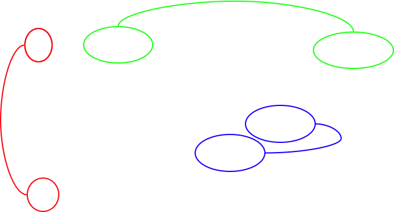
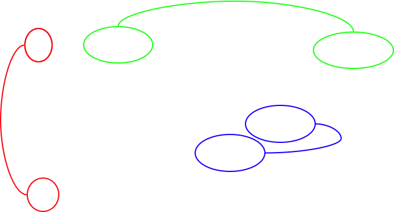

Who is sequencing and annotating the papaya genome?
The papaya genome is being sequenced at the University of Hawaii's College of Natural Sciences' Advanced Studies in Genomics, Proteomics, and Bioinformations and directed by Maqsudul Alam. The genome sequencing is led by Shaobin Hou and Maqsudul Alam while the sequence assembly and annotation is lead by Maqsudul Alam, Lei Wang, Steven Salzberg. The team leaders for annotation are Yun Feng at Nakai University, China, Jimmy Saw and Alexandre Dionne-Laporte at the University of Hawaii. Genetic and physical mapping is being carried out at the Hawaii Agriculture Research Center and the University of Illinois at Urbana-Champaign and directed by Ray Ming and Qingyi Yu. The Hawaii Papaya Genome Project's website can provide more information as to why the papaya genome is being sequenced.
Figure 1. This diagram depicts the lineages leading to the modern day genomes of Arabidopsis and papaya, and highlights the importance of the papaya genome for understanding the evolution of the post-tetraploid Arabidopsis genome. The papaya lineage branched from the Arabidopsis lineage before the Arabidopsis lineage underwent a tetraploidy event 25-70 million years ago. In the time since that divergence, the papaya lineage has not undergone a genome duplication event (unpublished observation). This makes papaya an ideal outgroup for studying the evolution of the post-tetraploid Arabidopsis genome because any changes to the Arabidopsis genome that were a result of its most recent genome duplication event would not have also occurred in the papaya lineage. In other words, the papaya genome can be viewed as being more similar to the pre-tetraploid Arabidopsis ancestor than the extant Arabidopsis genome and therefore should be useful for understanding the evolution of the post-tetraploid Arabidopsis genome.
Welcome papaya genome researcher!
Thanks to the Hawaii Papaya Genome Project, and the Arabidopsis genomics community, papaya (Cp) and Arabidopsis (At) genomes can now be compared to provide new insight into plant genome evolution. Papaya and Arabidopsis are both in the order of Brassicales and papaya is an outgroup to the most recent tetraploidy event (also called the alpha event) in the Arabidopsis lineage. This phylogenetic relationship allows for better annotation of both papaya and Arabidopsis genomes and genes, to spot subfunctionalization events in At, to hypothesize neofunctionalization events, and to reconstruct a good likeness of the Brassicales ancestor.
This site gives an overview of some of our research comparing the post-tetraploid Arabidopsis genome to papaya's genome. We have been using our newest comparative genomics tool, SynView, to simultaneously compare two syntenic regions from Arabidopsis and one from papaya. Near the end of this site is a section on how you can use SynView to comparing papaya and Arabidopsis. However, SynView is still beta software and our lead programmer, Eric Lyons, is counting on user feedback. Feel free to contact Eric, or any of us in the Freeling-Thomas collaboration, using the e-mail addresses on the "Contact Us" page. Thanks.

 

What's in this site?
Follow this link for an overview of post-tetraploid genome evolution of Arabidopsis and how the papaya genome is an ideal outgroup for this analysis.